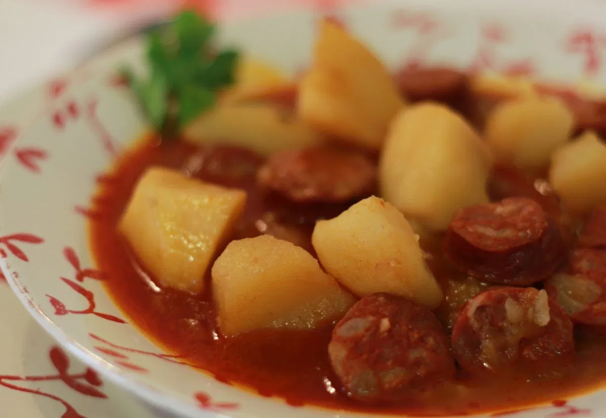
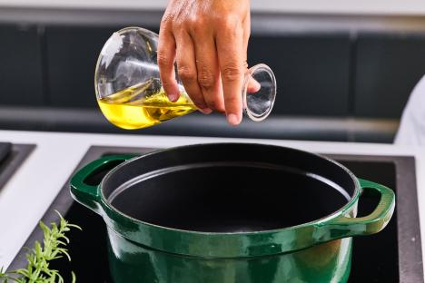
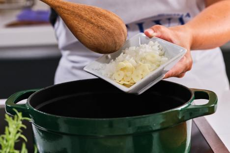
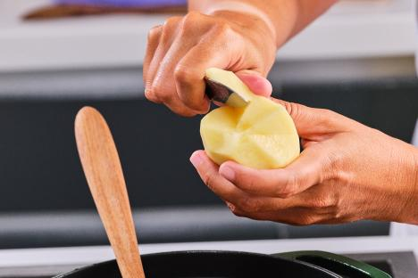
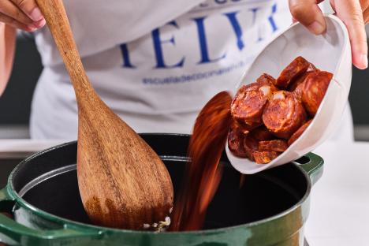
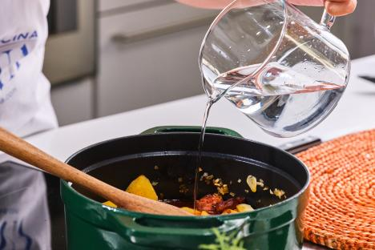
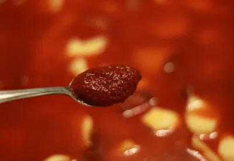

Información
Raciones: 6 personas | Tiempo de preparación: 1 hora |
Dificultad: Fácil
Ingredientes
- 2 kg de patatas para guisar
- 500 g de chorizo (dulce o picante)
- 2 cebollas grandes
- 3 hojas de laurel
- 50 ml de aceite de oliva virgen extra
- 1 punta de cayena
- 4 pimientos choriceros remojados en agua o 1 cucharada de su pulpa
- 6 dientes de ajo
- 2 litros de caldo de carne (o agua)
- 1 cucharada de pimentón dulce
- Sal al gusto

Instrucciones
- Añadimos a una cazuela grande un chorrito de aceite de oliva virgen extra.

- Picamos muy finas las cebollas y las añadimos a la cazuela. Rehogamos a fuego suave unos 15 minutos.

- Pelamos las patatas y las rompemos en trozos de unos 4-5 cm con la ayuda de un cuchillo.

- Cortamos el chorizo en tacos gruesos y lo echamos al sofrito de cebolla junto a los dientes de ajo sin
pelar. Rehogamos un par de minutos.

- Añadimos las patatas y juntamos bien con el resto de ingredientes, echamos caldo de carne hasta cubrir
las patatas.

- Subimos el fuego y cuando rompa a hervir, lo bajamos y añadimos la pulpa de los pimientos choriceros.

- Cocemos todo durante unos 30 minutos hasta que las patatas estén hechas. Dejamos reposar 10 minutos y
corregimos de sal si fuese necesario.
- Si el caldo queda muy líquido, aplastamos una patata y la devolvemos al guiso.
Notas y Sugerencias
Recuerda ajustar la sal al final y aplastar una patata si el caldo está muy líquido para espesar el guiso.